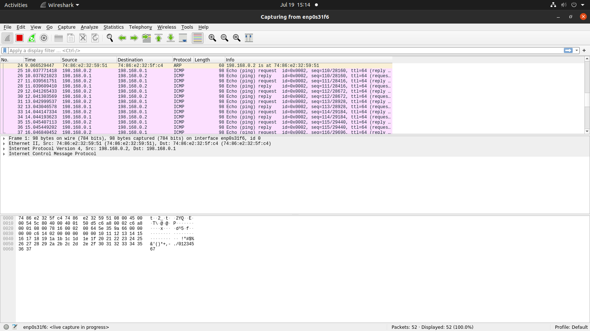

Setup a wired LAN using Layer 2 Switch. It includes preparation of cable, testing of cable using line tester, configuration machine using IP addresses, testing using PING utility & demonstrating the PING packets captured traces using Wireshark Packet Analyzer Tool.
A computer network can be defined as a collection of computing devices (nodes) interconnected by wires or wireless means and governed by a set of standards(protocols) in order to share data and resources.
| Characteristic | LAN | MAN | WAN |
|---|---|---|---|
| Definition | Local area network | Metropolitan area network | Wide area network |
| Coverage | Building/Campus | City/Large campus | Multiple cities/countries |
| Design and maintenance | Easy | Moderate | Difficult |
| Speed | High (100 Mbps to 10 Gbps) | Moderate to High (10 Mbps to 1 Gbps) | Variable (1 Mbps to several hundred Mbps) |
| Propagation delay | Short | Moderate | Long |
| Technology | Ethernet, Wi-Fi | Ethernet, FDDI, ATM | MPLS, Frame Relay, ATM, VSAT |
| Cost | Low | Moderate | High |
| Use Cases | Offices, Schools | Government, Universities | Internet, Corporate Networks |
| Security | Easier to secure | Moderately challenging | Most challenging |
| Fault tolerant | More tolerant | Less tolerant | Less tolerant |
| Congestion | Less | More | More |
| Layer No. | OSI Model Layers | TCP/IP Model Stages | Devices | Protocols | Services |
|---|---|---|---|---|---|
| 1 | Physical | Network Access | Hubs, Repeaters, Cables | Ethernet, USB | Bit transmission |
| 2 | Data Link | Network Access | Switches, Bridges | Ethernet, PPP, Frame Relay, MAC, ARP | Data framing, MAC addressing, Error detection |
| 3 | Network | Internet | Routers | IP (IPv4, IPv6), ICMP, IPSec, ARP | Logical addressing, Routing |
| 4 | Transport | Transport | - | TCP, UDP | End-to-end communication, Flow control, Error correction |
| 5 | Session | Application | - | NetBIOS, PPTP, RPC Session management, Authentication | |
| 6 | Presentation | Application | - | SSL/TLS, FTP, JPEG, MPEG, GIF | Data translation, Encryption/Decryption |
| 7 | Application | Application | - | HTTP, HTTPS, FTP, SMTP, DNS, Telnet, POP3, IMAP, SNMP | Network services to end-users |
ifconfig command
The ifconfig (interface configuration) command is used to configure, manage, and query network interface parameters in Unix-based systems, including Linux. It's a powerful tool for network management, allowing users to view and change the configuration of network interfaces.sudo wireshark Command
wireshark is a powerful network protocol analyser that allows users to capture and interactively browse the traffic running on a computer network. \
Running it with sudo (superuser do) grants the necessary permissions to capture packets on network interfaces.The ping command is a network utility used to test the reachability of a host on an Internet Protocol (IP) network.
It is also used to measure the round-trip time for messages sent from the originating host to a destination computer.
ping uses the ICMP protocol’s mandatory ECHO_REQUEST datagram to elicit an ICMP ECHO_RESPONSE from a host or gateway.
ECHO_REQUEST datagrams (‘’ping’’) have an IP and ICMP header, followed by a struct timeval and then an arbitrary number of “pad” bytes used to fill out the packet.
-c count: Send count number of packets and then stop.-i interval: Wait interval seconds between sending each packet. The default is one second.-s packetsize: Specify the number of data bytes to be sent.
The default is 56, which translates into 64 ICMP data bytes when combined with the 8 bytes of ICMP header data.-t ttl: Set the Time To Live (TTL) value for the packets.-W timeout: Time to wait for a response, in seconds.When a ping is made from machine A to machine B which are connected through a switch through the wireshark sniffing tool and

